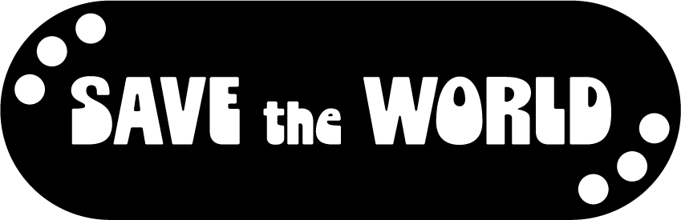

Overconsumptie
In 2021 komt een normaal persoon ongeveer 6.000 tot 10.000 reclames te zien elkedag. Dit is twee keer zoveel dan in 2007 en 12 keer zoveel sinds de jaren 70.
We krijgen voortdurend te horen dat we steeds meer moeten kopen, dat wat we nu bezitten niet genoeg is. Er wordt ons aangepraat dat, als we dat ene product kopen waar we zo naar verlangen, al onze problemen zullen verdwijnen. Maar ik kan je nu alvast vertellen dat het niet zo is. Nederlanders kopen jaarlijks ongeveer 46 kleding stukken. En ze gooien er 40 weg. Een groot deel komt uiteindelijk op afvalbergen in Afrika terecht.
Het wordt vaak gedreven door een consumptiemaatschappij waarin veel waarde wordt gehecht aan materiële bezittingen en steeds nieuwe producten. Dit gedrag heeft echter negatieve gevolgen voor het milieu, zoals het uitputten van natuurlijke hulpbronnen, vervuiling, en het bijdragen aan klimaatverandering. Ook zorgt het voor grote hoeveelheden afval, omdat producten vaak snel worden weggegooid. Overconsumptie kan ook leiden tot sociale en psychologische problemen, zoals stress en schuldgevoel door constante koopdrang en financiële schulden.
Klik op de knop als je de wereld wilt redden!
Info
Gemaakt door een CMD Student
Deze webpagina behaalt een CO₂-beoordeling van A+
Amsterdam University of Applied Sciences